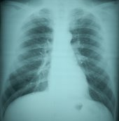

CHEST RADIOGRAPHY
 ShareCompartir
ShareCompartir

Issues in Classification of Chest Radiographs
Accuracy and Precision
As with most medical determinations, radiographic classifications are subject to accuracy and precision considerations. Accuracy is defined as the ability for a measurement to reflect the true degree of underlying abnormality, that is, unbiasedness. Precision reflects the extent to which a measurement is consistent across repeated determinations. Both criteria are important – a measurement technique can be precise but inaccurate, or can be accurate and imprecise, but preferably should be both accurate and precise.
Reader Variability
Inter- and intra-reader variability in chest radiography has existed since chest radiography was first used to identify and classify pneumoconiosis (Fletcher 1949). Inter-reader variability occurs when readers disagree amongst themselves on a classification. Intra-reader variability occurs when a reader classifies a radiograph differently on different occasions. Reader variability prompted the International Labour Office (ILO) to develop the ILO Classification scheme for pneumoconioses and has prompted its continued revision since then (Bohlig 1970). It was also a catalyst for development of the NIOSH B Reader Program.
Reader variability is probably inherent in radiograph classification for pneumoconioses. When excessive, reader variability is undesirable because it severely reduces the quality and usefulness of the classification data. Extreme differences can skew study results and, for example, impact eligibility for compensation programs and award of compensation. Lack of agreement among classifications from multiple readers involved in epidemiological or surveillance studies can usually be minimized using appropriate scientific techniques, but radiographic classification in contested settings often results in polarized opinions that are extremely difficult to reconcile (Jacobsen 1991, Ducatman 1991).
Inter-reader variation consists of two components: systematic differences and random variability. Systematic variation between readers, in which one reader persistently reports more or less abnormality than another, is related to bias, and is best handled using techniques that ensure accuracy in radiographic classification (see below). However, despite all attempts, some systematic inter-reader differences may remain. The persistence of reader differences despite intensive measures to assess and correct it is demonstrated by findings for British coal miners. The British National Coal Board had a rigorous quality assurance process for minimization of both inter- and intra-reader variability. Despite these efforts, reader variability was not totally eliminated (Fay 1959, Hurley 1982). Given this, it may often be prudent to use multiple readers to obtain independent classifications and use an unbiased summary measure, such as the median classification, as the final determination. In this way, the final determination would reflect mainstream classification tendencies as much as possible.
Accuracy in Film Classification
Accuracy in radiographic classification is gained through careful and rigorous reader training and through applying specific conditions designed to eliminate bias during the classification process.
The following bulleted list shows important measures that can be applied to ensure accuracy (note: the same degree of accuracy is not required in all settings where ILO classifications are obtained; recommended practices for each of these settings are provided elsewhere on this web site).
- Reader selection
- Classification blinded to knowledge of potential exposures and other information,
- An environment that does not reward extreme determinations,
- Concurrent quality control measures
Application of these procedures should help provide unbiased classifications. When they are ignored bias should be suspected.
Reader selection
Procedures that give rise to unbiased classifications include either selection based on pre-existing evidence of mainstream classification tendencies or random selection from a pool of available readers. Selection of readers based on other criteria leaves the process open to accusations of bias. Proper reader selection procedures are not alone sufficient to ensure accuracy; it needs to be accompanied by an appropriate program of quality assurance.
Classification blinded to knowledge of potential exposures and other information
Overall bias can occur when readers have information concerning the radiographs being classified that can consciously or unconsciously influence their classifications. For example, knowledge of worker exposures can bias readers to recording more or fewer abnormalities depending on the extent of the exposure, or preferentially selecting certain types of abnormality depending on the nature of the exposure (e.g., small rounded opacities for silica-exposed workers versus small irregular opacities for asbestos-exposed workers). Blinding readers allows the classification to be made absent of preconceived knowledge and concepts. In order to minimize such bias, any identifying information, such as age, occupation, work site, and medical history should be removed from the radiograph, or otherwise effectively obscured, before it is sent for classification. Withholding information on the source of the radiographs, and for whom the classification has been requested (e.g., the plaintiff or defendant in contested proceedings) will also help prevent bias. Blinding is not appropriate for medical diagnosis and worker medical monitoring. However, if radiographs from worker monitoring programs are to be used for epidemiologic studies of prevalence or exposure-response, it is preferable that they be re-read blinded to information that might influence a reader’s classification (e.g., industry, occupation, tenure etc) following the guidelines provided in these pages for that purpose.
With respect to the epidemiologic assessment of temporal trends in disease development or progression using sequential radiographs, it has been shown that knowledge of the order in which the radiographs were taken influences a reader’s classifications (Reger 1974).
An environment that does not reward extreme determinations
An environment that rewards the reader for reporting disease more or less disease clearly leads to bias. It follows that, along with blinded classification, remuneration should not be linked with the outcome reported by the reader. It also follows that those who seek classifications should not knowingly select readers whose classifications are likely to be biased in a direction that suits their preference.
Quality assurance
There are various approaches to quality assurance, some being better than others. Concurrent monitoring of classification levels can be accomplished by adding quality assurance ("calibration") radiographs to the set for which classifications are being sought without the reader being aware of which are the calibration radiographs. For example, a National Institutes of Health-sponsored workshop suggested including chest films of unexposed workers in epidemiologic studies for purposes of quality control (Weill 1975). Optimally, quality assurance radiographs should include a range of abnormality levels and types previously classified by expert readers. There are many benefits to this approach. First, because the reader is unaware of which are the quality control radiographs, yet knows that they exist within the study, the reader is under pressure to conform to standard classification practices. Second, the results for the quality assurance radiographs can be used to assess the accuracy of the reader’s classifications. Based on this assessment, it may be necessary to disregard or adjust the reader’s classifications. Results of quality control classifications can also be used to provide feedback to readers to maintain and improve readers' performance (Sheers 1978). This approach eliminates the defects in other quality control approaches, such as those that are undertaken independently and externally to the study, and during which a reader may consciously modify their behavior to appear more mainstream. Although the use of unknown calibration radiographs cannot be expected to eliminate all variation between readers, it should result in the elimination of excesses.
Multiple Readers
The preferable way to ensure accuracy is through strict reader training, prior reader evaluation with feedback using a pilot reading trial, and the use of quality control (calibration) readings simultaneous with the candidate image readings. However, as noted above, despite careful training, evaluation, and feedback, systematic reader differences can persist. Multiple readings, coupled with use of an appropriate summary measure (e.g., the median reading) can help to minimize the impact of any one reader on the final determinations. Multiple readings also help to improve the precision of the data, as noted below.
The use of reader panels, in which groups of readers jointly classify radiographs and together come to a consensus or unanimous decision, is not usually recommended. Apart from the logistical difficulties of convening such panels, the decisions that are made may fail to represent the true range of opinions in the group. Instead, the joint classifications may reflect those of the most dominant or experienced reader or readers in the group.
Precision in Film Classification
Experience, careful training, and feedback to readers can help maximize precision of classifications among readers. Precision is also gained by obtaining multiple determinations and employing a summary index that reflects the central tendency (average) of those determinations. Precision in film classification is gained, therefore, using summary (e.g. median) scores derived from multiple independent classifications by different readers who classify the films independently (that is without other readers being present and without knowledge of other readers’ classifications). The number of independent classifications obtained depends on the setting and on the social and monetary costs involved.
Summary classifications derived from the independent classifications are more precise than any single individual classification. However, in deriving summary classifications, care should be taken not to introduce bias. Valid summarization methods include the use of median classifications or properly-designed consensus measures.
Inter-reader comparisons
In some settings it may be advantageous to undertake preliminary classification activities in which the same radiographs are classified independently by multiple readers, and the findings reported back to the readers. As a form of ‘passive’ quality control, such information may reveal to a reader his differences from the mainstream, providing the opportunity for education and self-correction to occur. In ‘active’ quality control, information from such preliminary procedures is employed in the final selection of readers, through the removal of extreme readers at each end of the scale. Similar quality assurance exercises can also be undertaken during the course of any classification process involving multiple readers and radiographs so as to provide continuing feedback and maintenance of standards. Done at the end, they provide a final check on reader consistency. Ultimately, however, such efforts provide only a form of relative quality assurance, in that the readers are compared only to each other and not to objective, external classifications. The only way to ensure true accuracy is to employ concurrent evaluation of calibration radiographs as noted above.
Reader Selection
Readers should be both proficient and experienced in classifying chest radiographs for pneumoconioses. Ideally, they should be current B Readers, have extensive experience in classifying radiographs of dust-exposed workers, and be representative of general classification practices among readers (i.e., not falling at either end of the extremes of the range of inter-reader variability). One strategy directed towards ensuring that classifications fall within the mainstream is to select readers randomly from the largest pool of B Readers.
References
Fletcher CM, Oldham PD. The problem of consistent radiological diagnosis in coalminers’ pneumoconiosis. An experimental study. Br J Ind Med 1949; 6:168-183.
Bohlig H, Bristol LJ, Cartier PH, et al. UICC/Cincinnati classification of the radiographic appearances of pneumoconiosis. Chest 1970; 58:57-67.
Jacobsen M. Part 5. Radiologic Abnormalities: Epidemiologic Utilization: The International Labour Office Classification: Use and Misuse. Ann NY Acad Sci 1991; 643:100-107.
Ducatman AM. Variability in interpretation of radiographs for asbestosis abnormalities: problems and solutions. Ann NY Acad Sci 1991; 643:108-20.
Reger RB, Amandus HE, Morgan WKC. On the diagnosis of coalworkers' pneumoconiosis - Anglo-American disharmony. Am Rev Respir Dis 1973; 108:1186-91
Fay JWJ, Rae S. The Pneumoconiosis Field Research of the National Coal Board. Ann Occup Hyg 1959; 1:149-61.
Hurley JF, Burns J, Copland L, et al. Coalworkers’ simple pneumoconiosis and exposure to dust at 10 British coalmines. Br J Ind Med 1982; 39:120-7.
Sheers G, Rossiter CE, Gilson JC, et al. UK naval dockyards asbestos study: radiological methods in the surveillance of workers exposed to asbestos. Br J Ind Med 1978; 35:195-203.
Weill H, Jones R. The chest roentgenogram as an epidemiologic tool. Report of a workshop. Arch Environ Health 1975; 30:435-9.
Reger RB, Petersen MR, Morgan WKC. Variation in the interpretation of radiographic change in pulmonary disease. Lancet 1974; 111-13.
- Page last reviewed: May 24, 2011
- Page last updated: August 16, 2010
- Content source:
- National Institute for Occupational Safety and Health Respiratory Health Division